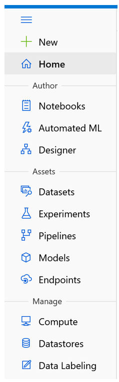

Machine Learning on Azure - Part 2
This is an excerpt from chapter 7 of my book, Data Engineering on Azure, which deals with machine learning workloads. This is part 2 in a 3 part series. In this post, we’ll explore the Azure Machine Learning (AML) service and set it up in preparation of running our model in the cloud.
In this post, like throughout the book, we’ll be using PowerShell Core and Azure CLI to interact with Azure. You can install PowerShell Core from here. Then from the PowerShell Core shell, you can install Azure CLI using the following command:
Invoke-WebRequest -Uri https://aka.ms/installazurecliwindows `
-OutFile .\AzureCLI.msi; Start-Process msiexec.exe `
-Wait -ArgumentList '/I AzureCLI.msi /quiet'; rm .\AzureCLI.msi
Once Azure CLI is installed, you can use az commands as we’ll see throughout this post. First, log into your Azure account:
az login
Introducing Azure Machine Learning
Azure Machine Learning is Microsoft’s Azure offering for creating and managing ML solutions in the cloud. An instance of Azure Machine Learning is called a workspace.
A workspace is the top-level resource for Azure Machine Larning, providing a centralized place to work with all the artifacts you create.
In this post, we’ll create and configure a workspace, then we’ll look at everything needed for taking our high spender model we developed in part 1 from our local machine and running it on Azure.
Creating a workspace
We’ll start by using Azure CLI to create a workspace. First, we install the azure-cli-ml extension, then we create a new resource group called aml-rg to host our ML workloads, and finally, we create a workspace in the new resource group. The following listing shows the steps:
az extension add -n azure-cli-ml
az group create `
--location "Central US" `
--name aml-rg
az ml workspace create `
--workspace-name aml `
--location "Central US" `
--resource-group aml-rg
The first line adds the azure-cli-ml extension. The second line creates the aml-rg resource group in the Central US Azure region. The last command creates a new Azure Machine Learning workspace named aml in the resource group.
The same way Azure Data Explorer (ADX) has a web UI accessible at https://dataexplorer.azure.com/ and Azure Data Factory has a web UI accessible at https://adf.azure.com/, Azure Machine Learning also has a web UI that you can find at https://ml.azure.com/. We will stick to the Azure CLI and the Python SDK to provision resources, but I encourage you to try the web UI. As we create more artifacts in this section, you can use the web UI to see how these are represented there. If you visit the web UI, you will see a navigation bar on the right with three sections: Author, Assets, and Manage. The following figure shows the navigation bar.
The Author section contains Notebooks, Automated ML, and Designer. We won’t focus on these but here is a quick walkthrough: Notebooks enables users to store Jupyter notebooks and other files directly in the workspace; Automated ML is a codeless solution for implementing ML; and the Designer is a visual drag-and-drop editor for ML. We won’t focus on these features because these facilitate model development. We’ll look at the DevOps aspects of ML using our existing Python model as an example, so this is less relevant for us. Of course, we could’ve built our model in Azure Machine Learning directly, but this way, we learn how we can onboard a model that wasn’t created specifically to run on Azure Machine Learning.
We will, however, touch on most of the items in the Assets and Manage sections. Assets are some of the concepts Azure Machine Learning deals with, such as Experiments and Models. We’ll cover these soon. The Manage section deals with the compute and storage resources for AML. Let’s zoom in on these.
Creating an Azure Machine Learning compute target
One of the great features of Azure Machine Learning is that it can automatically scale compute resources to train models. Remember, compute in the cloud refers to CPU and RAM resources. A virtual machine (VM) in the cloud provides CPU and RAM, but it incurs costs as long as it runs. This is especially relevant for ML workloads, which might need a lot of resources during training and training might not happen continuously.
For example, maybe our high spender model needs to be trained every month to predict next month’s marketing campaign targets. It would be wasteful to keep a VM running all the time if we only need it one day of the month. Of course, we could manually turn it on or off, but Azure Machine Learning gives us an even better option—compute targets.
A compute target specifies a compute resource on which we want to run our ML. This includes the maximum number of nodes and the VM size.
As a reminder, Azure has a set of defined VM sizes, each with different performance characteristics and associated costs.[1] A compute target specifies which VM type and how many instances we’ll need, but it won’t provision the resources until we run a model and request this target. Once the model run finishes, the resources are deprovisioned. This makes Azure Machine Learning compute elastic: resources are allocated when needed, then freed up automatically. We only pay for what we use, and the service takes care of all the underlying infrastructure.
Let’s specify a compute target for our example. We’ll request, at most, one node, use the economical STANDARD_D1_V2 VM size (1 CPU, 3.5 GiB memory), and name it d1compute. The following listing shows the corresponding Azure CLI command:
az ml computetarget create amlcompute `
--max-nodes 1 `
--name "d1compute" `
--vm-size STANDARD_D1_V2 `
--workspace-name aml `
--resource-group aml-rg
This won’t cost us anything until we actually run a ML workload. If you click through the UI to the Compute section and navigate to Compute Clusters, you should see the new definition. Other compute options in AML are compute instances that include:
- VMs preimaged with common ML tools and libraries.
- Inference clusters, where we can package and deploy models on Kunbernetes and expose these as REST endpoints.
- Attached compute the enables us to target compute resources like Azure Data Bricks not managed by Azure Machine Learning.
Let’s move on to storage now. We’ll see how we can make our input available to Azure Machine Learning.
Setting up Azure Machine Learning storage
We’ll start by uploading our input.csv file from the previous section to an Azure Data Lake Storage (ADLS) account. Let’s first create the account and a filesystem named fs1. In the code samples below, make sure to replace <Your ADLS account> with an actual name. This name needs to be unique across Azure, since it becomes part of the URL used to address the storage account, so we can’t hardcode the name in the example.
az group create `
--location "Central US" `
--name adls-rg
az storage account create `
--name <Your ADLS account> `
--resource-group adls-rg `
--enable-hierarchical-namespace true
az storage fs create `
--account-name <Your ADLS account> `
--name fs1
The first command creates a new resource group named adls-rg. The second command provisions an Azure Data Lake Storage Gen2 account in the resource group. The last command creates a filesystem named fs1 in the storage account.
Let’s now upload the input.csv file created in part 1 to the filesystem. For this, we’ll use the Azure CLI upload command to upload our input file under the models/highspenders/input.csv path. The next listing shows the commands.
az storage fs file upload `
--file-system fs1 `
--path "models/highspenders/input.csv" `
--source input.csv `
--account-name <Your ADLS account>
In practice, we would have various Azure Data Factory pipelines copying datasets to our storage layers. From there, we would need to make these datasets available to Azure Machine Learning. We’ll do this by attaching a datastore.
An Azure Machine Learning datastore enable us to connect to an external storage account like Azure’s Blob Storage, Data Lake, SQL, Databricks, etc., making it available to our ML models.
First, we need to provision a service principal that Azure Machine Learning can use to authenticate. We will create a new service principal in Azure Active Directory (AAD) and grant it Storage Blob Data Contributor rights on the data lake. This allows the service principal to read and write data in the data lake. The following listing shows the steps.
$sp = az ad sp create-for-rbac | ConvertFrom-Json
$acc = az storage account show `
--name <Your ADLS account> | ConvertFrom-Json
az role assignment create `
--role "Storage Blob Data Contributor" `
--assignee $sp.appId `
--scope $acc.id
The first command creates a principal stored in $sp for role-base access control (RBAC). The second command retrieves the details of the Azure Data Lake Storage account and stores it in $acc. The last command creates a new role assignment, granting read/write access on the storage account to the service principal we just created.
The service principal can now access data in the storage account. The next step is to attach the account to Azure Machine Learning, giving it the service principal ID and secret so it can use these to connect to the account. The following listing shows how to do this.
az ml datastore attach-adls-gen2 `
--account-name <Your ADLS account> `
--client-id $sp.appId `
--client-secret $sp.password `
--tenant-id $sp.tenant `
--file-system fs1 `
--name MLData
--workspace-name aml `
--resource-group aml-rg
This attaches an Azure Data Lake Storage Gen2 datastore to Azure Machine Learning, using a service principal to authenticate. We need to supply the data lake account, the service principal ID, secret, and tenant, the filesystem we want to attach, and the name we want to give it in Azure Machine Learning (MLData in our case).
Now if you navigate to the Storage section in the UI, you should see the newly created MLData datastore. In fact, you should see a couple more datastores that are created by default and used within the workspace. In practice, we need to connect to external storage, and data stores are the way to do that.
Our workspace is now configured with both a compute target and an attached data store. Let’s grant our service, principalContributor, rights to the Azure Machine Learning workspace too, so we can use it for deployment. Note, in a production environment, we would have separate service principals for better security, then if one of the principals gets compromised, it has access to fewer resources. We’ll reuse our $sp service principal, though, to keep things brief. The following listing shows how to grant the rights.
$aml = az ml workspace show `
--workspace-name aml `
--resource-group aml-rg `
| ConvertFrom-Json
az role assignment create `
--role "Contributor" `
--assignee $sp.appId `
--scope $aml.id
The first command gets the details of an Azure Machine Learning workspace and stores them in the $aml variable. The second command creates a role assignment, granting the Contributor role to the service principal $sp on the workspace.
We’ll also store the service principal’s password in an environment variable so that we can read it without having to embed it into the code. The following listing shows how to set an environment variable in a PowerShell session. This won’t get persisted across sessions, so make a note of $sp.password.
$env:SP_PASSWORD = $sp.password
The name password is a bit misleading. This is an autogenerated client secret that was created when we ran az ad sp create-for-rbac (which stands for “Azure Active Directory service principal create for role-based access control”). We are all set. The next step is to publish our Python code and run it in the cloud. We will do that in part 3.
| [1] | For more on VM sizes and costs, see https://docs.microsoft.com/en-us/azure/virtual-machines/sizes. |